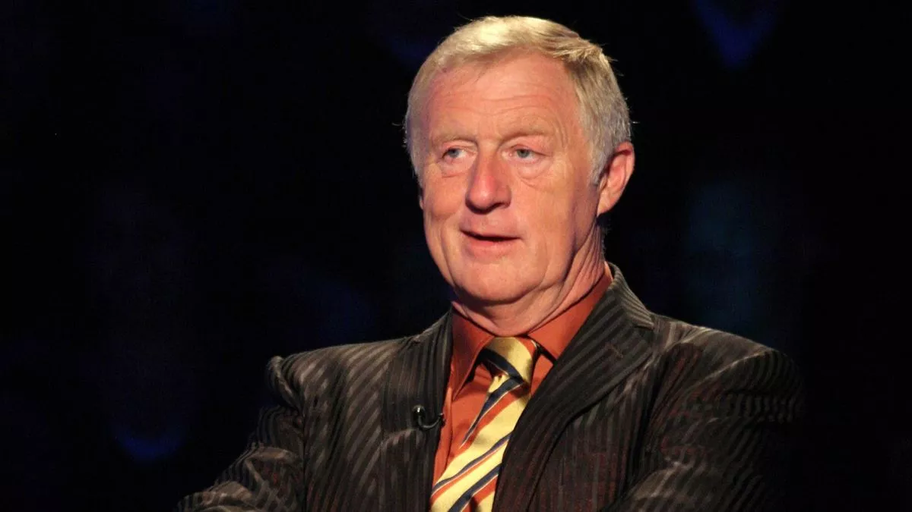
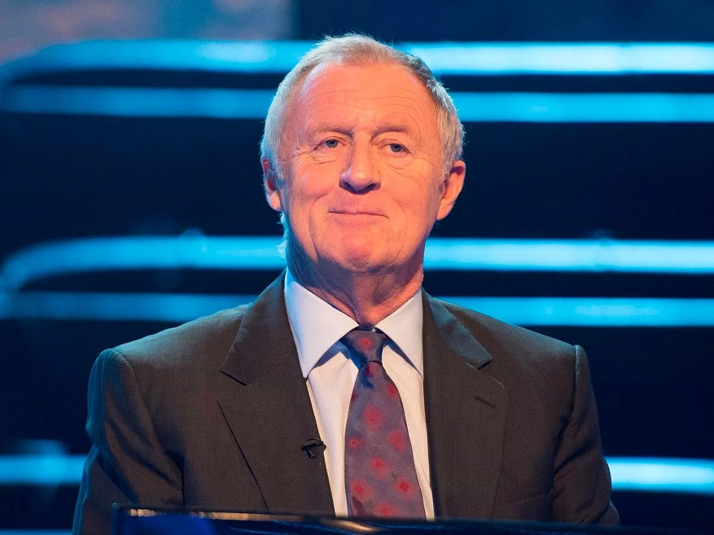
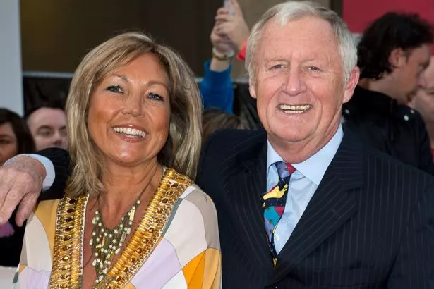

Wer ist Chris Tarrant?
(Der erste Moderator von UK)

Chris Tarrant ist ein britischer Fernsehmoderator, der vor allem durch seine Moderation der Quizsendung Who Wants to Be a Millionaire? bekannt wurde. Er präsentierte die Show von 1998 bis 2014 und prägte mit seiner unverwechselbaren Art das Format, das weltweit adaptiert wurde.
Frühes Leben und Ausbildung

Chris Tarrant wurde am 10. Oktober 1946 in Reading, England, geboren. Er besuchte die King’s School in Worcester und zeigte früh Interesse an Journalismus und Unterhaltung. Anschließend studierte er Anglistik an der University of Birmingham und begann seine Karriere beim Radio.
Karriere

Chris Tarrant begann seine Laufbahn im Rundfunk und Fernsehen bereits in den 1970er Jahren. Einige wichtige Stationen seiner Karriere umfassen:
- 1972–1983: Moderator der Kindersendung Tiswas
- 1984–1992: Gastgeber der Sendung OTT
- 1993–2004: Moderator der Radiosendung Capital Breakfast
- 1998–2014: Moderator von Who Wants to Be a Millionaire?
Tarrant machte sich mit seinem humorvollen und spannungsgeladenen Moderationsstil einen Namen. Sein Satz "Is that your final answer?" wurde weltweit bekannt.
Privates Leben

Chris Tarrant war zweimal verheiratet und hat mehrere Kinder. Neben seiner Fernsehkarriere engagiert er sich in verschiedenen wohltätigen Organisationen. Er erlitt 2014 einen Schlaganfall, von dem er sich jedoch gut erholte.